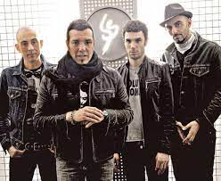

Catupecu Machu fue una banda argentina de rock, formada en 1994 en el barrio porteño de Villa Luro y que actualmente se encuentra en inactividad. Su formación original estuvo compuesta por los hermanos Fernando Ruiz Díaz y Gabriel Ruiz Díaz (†), mientras que la última formación contó con la participación de Fernando Ruiz Díaz en voz, guitarras y bajo, Agustín Rocino en batería, Macabre en teclados, bajo y coros y Sebastián Cáceres en bajo y guitarras. A fines de 2017 la banda anunció que hasta nuevo aviso y por tiempo indeterminado suspenderían su actividad. El líder Fernando Ruiz Díaz, pasó a dedicarse a su proyecto paralelo, la banda conocida como Vanthra por su parte Macabre y Agustín Rocino formaron Maleboux . Su música se enmarca dentro del rock, el pop y la innovación sonora,1 dentro de un formato de canción.2 Catupecu Machu ha sido premiada como una de las más destacadas bandas del rock de Argentina y del rock de Latinoamérica del siglo XXI. En 2015 Catupecu Machu recibió el Diploma al Mérito en los Premios Konex, en reconocimiento a su trayectoria en la música argentina durante la década.3 En 2006 la revista estadounidense Al Borde publicó una lista con las 500 mejores canciones del rock iberoamericano, premiando sus canciones «Magia veneno» (N°340) e «Y lo que quiero es que pises sin el suelo» (N°184).4 En 2002 la revista Rolling Stone Argentina y el canal de televisión MTV lanzaron una lista de las mejores 100 canciones de rock argentino de la historia, premiando su canción «Y lo que quiero es que pises sin el suelo» (N°37).5 En 2007 el sitio web de rock argentino Rock.com.ar publicó una lista similar, premiando su canción «Magia veneno» (N°28).6 En 2011 el diario La Nación publicó una lista con los mejores 10 videoclips del rock argentino, premiando su videoclip de «Y lo que quiero es que pises sin el suelo» (N.º 8).7 En 2006, la revista Al Borde publicó también una lista con los 250 mejores álbumes del rock iberoamericano, premiando su álbum Cuentos decapitados (N°120).8 En 2007 la revista Rolling Stone Argentina publicó una lista con los 100 mejores álbumes del rock argentino de la historia, premiando su álbum El número imperfecto (N°47).9
| Año | Disco |
|---|---|
| 1997 | Dale! |
| 1998 | A morir!!! |
| 2000 | Cuentos decapitados |
| 2002 | Eso vive DVD |
| 2002 | Cuadros dentro de cuadros |
| 2004 | El número imperfecto |
| 2007 | Laberintos entre aristas y dialectos |
| 2009 | Simetría de Moebius |
| 2011 | El mezcal y la cobra |
| 2016 | La piel del camino (2016) y el receso indefinido |